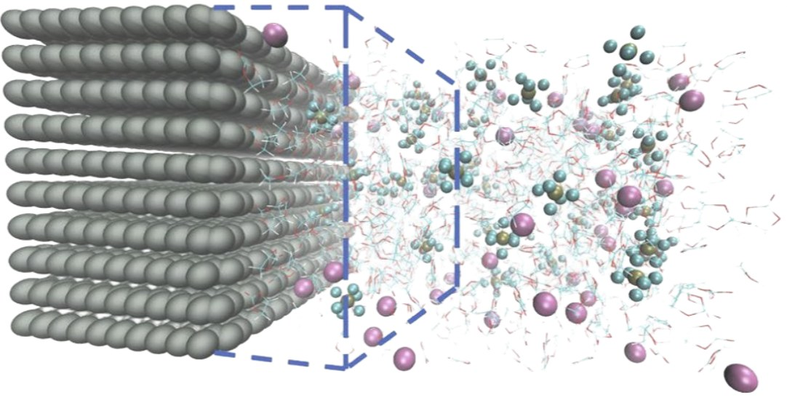
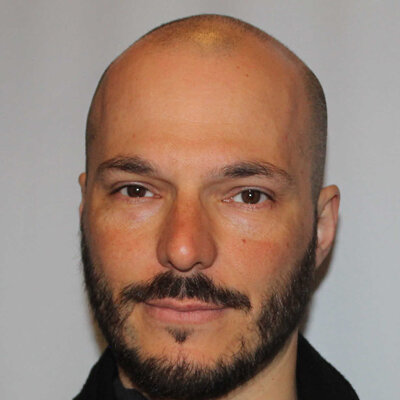

CO₂ Adsorption in nanostructured materials
[Two or three sentences describing this research area, the methods used and typical applications.]
University of Stavanger
With great computational power comes great responsibility. At CoReLab, we use it to solve complex problems — from decision-making in oil reservoir management to molecular modeling of CO₂ adsorption and battery materials, combining physics-based simulation with machine learning and data-driven methods
Research
CoReLab operates as a cross-faculty collaboration at the intersection of computational science, multiscale modeling, and data-driven decision analysis. Our research is aimed at complex physical systems across scales — from atomic and molecular processes to macroscopic behavior — to develop models that provide reliable insight, prediction, and decision support. On the molecular scale, we employ methods such as molecular dynamics, density functional theory and rare-event sampling to investigate fundamental mechanisms and connect microscopic interactions to macroscopic material properties. In parallel, our decision-analysis research focuses on continuously evolving models that integrate new information to improve predictions and support robust decisions in complex systems such as oil reservoirs. Across these areas, advanced simulation techniques and machine learning provide a common computational framework for describing systems holistically to extract useful knowledge from both physical models and data.
[Two or three sentences describing this research area, the methods used and typical applications.]

02Investigation of interfacial kinetics of novel sodium-ion battery materials using reactive Molecular Dynamics and Rare Event Sampling
[Two or three sentences describing this research area, the methods used and typical applications.]
[Two or three sentences describing this research area, the methods used and typical applications.]
Group
Researchers and students in Enrico Riccardi’s research group.

Professor of Computational Engineering
enrico.riccardi
Enrico develops molecular simulation, rare-event sampling and machine-learning methods to understand complex physical and biological systems. He co-develops PyRETIS and combines path sampling with data analysis to uncover reaction mechanisms and predict the rates of processes that are difficult to observe in conventional simulations.
His work spans molecular transport, interfacial phenomena and biomolecular kinetics, with current applications in CO₂ adsorption, sodium-ion battery materials and data-driven decision support.

Optimization Oil Field Flow
shipra.singh
Decision Making Analysis Oil Well Management
david-ioan.chitan

Data Assimilation, Oil & Gas Field development and Decision Making Analysis
auref.rostamian
CO₂ Adsorption in Carbon-Nanostructures
bahar.khanshaghaghi
Sodium-Ion Battery Interfacial Kinetics
jonas.jaeger

CO₂ Storage in Oil
macdonald.c.sunday
CoReLab fosters a lively scientific exchange between faculty and maintains collaborations with other research groups
Collaborating group leader & Professor Theoretical Materials Physics
eva.rauls
Postdoc Nanomaterials
Supervisor: Eva Rauls
joshua.s.tse
PhD student · CO₂ adsorption
Supervisor: Eva Rauls
konstantinos.alektoridis
Collaborating group leader & Professor Battery Technology
david.s.hall
PhD student · Sodium-Ion Batteries
Supervisor: David Scott Hall
james.d.lanigan
Publications
Recent work by CoReLab members, updated daily from their ORCID records.
The latest publications appear here when the site is published. To see them in a local preview, run python3 scripts/build_site.py first (see README.md).
Students
Interested in writing your thesis with us? Below are currently available topics. You are also welcome to get in touch with your own ideas.
Use molecular dynamics and rare-event sampling to find out how sodium enters black phosphorus, a promising electrode material for sodium-ion batteries.
Supervisor: Jonas Jäger
[Short description of the project, what the student will learn and the required background.]
Supervisor: [Name Surname]
[Short description of the project, what the student will learn and the required background.]
Supervisor: [Name Surname]
Contact
enrico.riccardi@uis.no